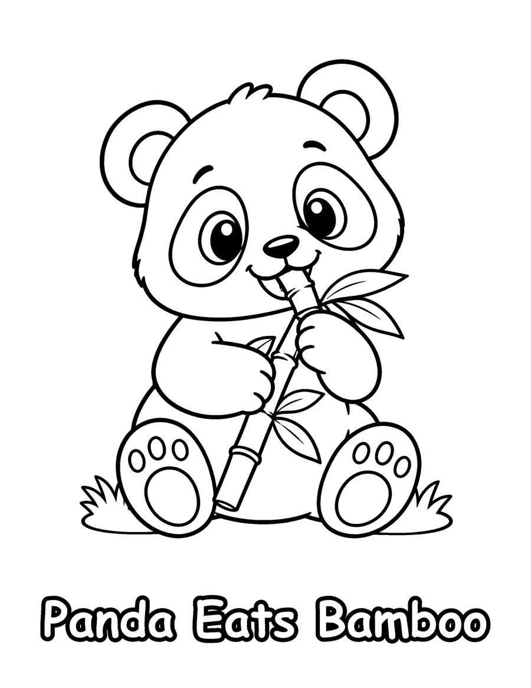
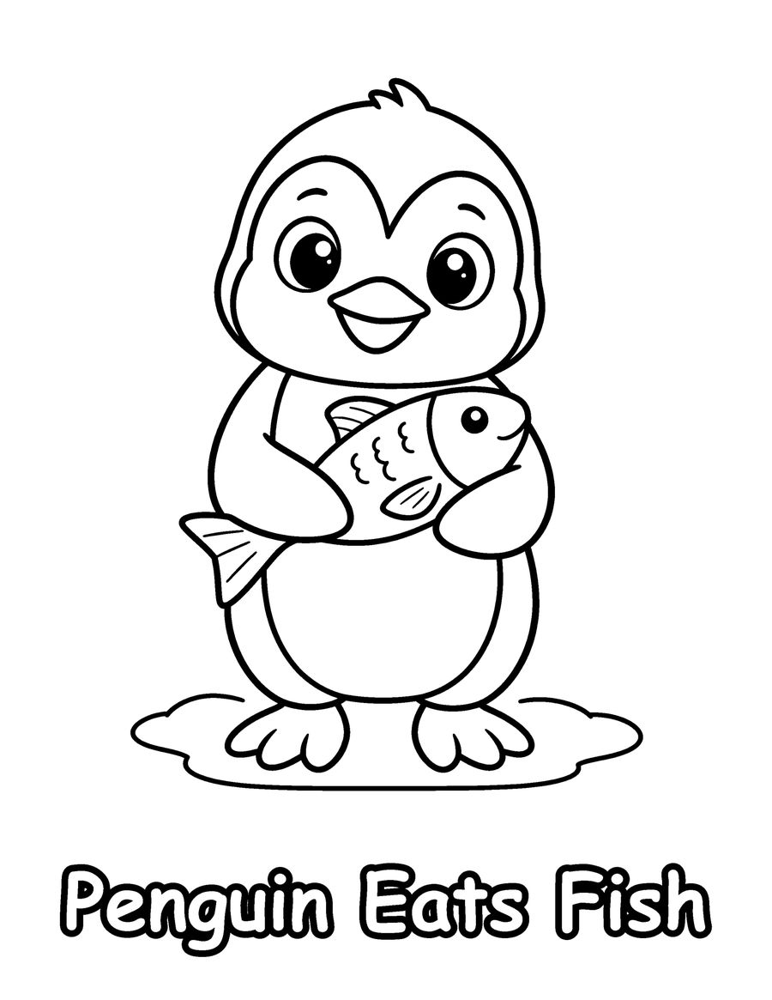
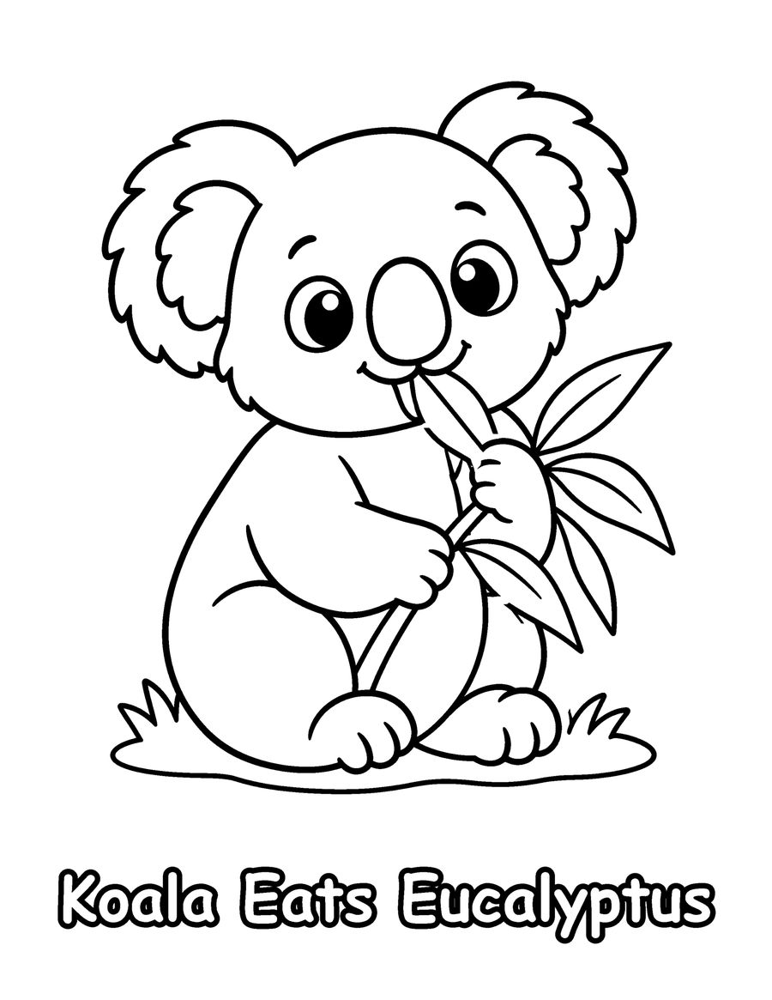

Does a panda eat carrots? What does a koala like for lunch? These free what-animals-eat coloring pages come from Who Eats What?, a preschool coloring book that shows each animal with its favorite food. The three free pages feature a panda with bamboo, a penguin with a fish, and a koala with eucalyptus leaves.
Matching animals to their food is an easy first step into science. After coloring, ask your child to guess what other animals eat, or sort the animals into those that eat plants and those that eat fish or insects. Pandas really do eat mostly bamboo, and koalas feed almost entirely on eucalyptus leaves. The drawings use thick outlines and big shapes for ages 3 to 6, and the pages fit nicely into a preschool science week, a farm or zoo theme, or a quiet moment at home. Print on US Letter paper at 100% scale. The full book has 40 animal and food pairs.
Your 3 free coloring pages

Penguin Eats Fish
Download free page (PDF)
Koala Eats Eucalyptus
Download free page (PDF)Printing tips
- Print at 100% scale on US Letter (8.5 x 11 in) paper. For A4, choose “Fit to page”.
- Use heavier paper (65 lb / 120 gsm or more) if you color with markers, so ink does not bleed through.
- Download the PDF first, then print from your PDF viewer for the sharpest lines.
Get all 40 pages
These 3 pages are a taste of Who Eats What? (Kids 3-6). The full coloring book has 40 pages, ready to print or color in a book.
More free coloring pages

Free Animal Coloring Pages for Preschoolers
Kids 3-6

Free ABC Animal Coloring Pages
Kids 3-6

Free Dinosaur Coloring Pages for Kids
Kids 3-6

Free Koala Coloring Pages for Kids
Kids 6-12